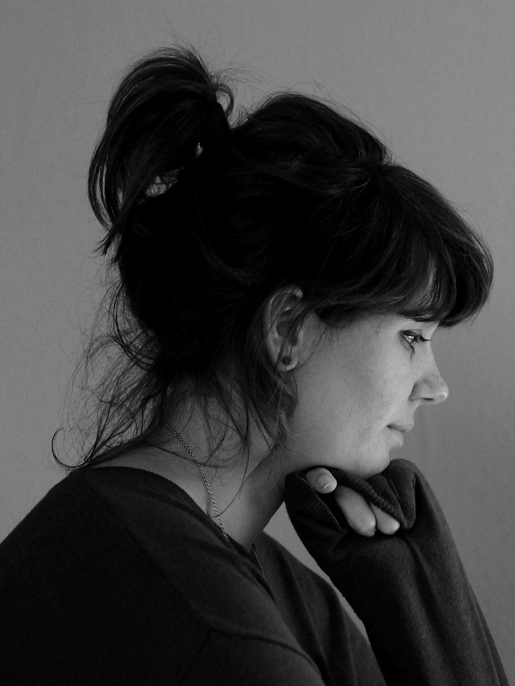

Lois van Baarle, better known as Loish, is a Dutch illustrator and digital artist renowned for her vibrant and expressive style. Her artwork combines flowing shapes, dynamic compositions, and rich color palettes to create captivating characters and dreamlike worlds. Often accented by subtle blue tones, her illustrations convey a unique sense of movement, warmth, and emotion.
Over the years, Loish has become one of the most influential figures in digital art, inspiring a global community through her artwork, tutorials, and creative insights. By blending traditional artistic principles with modern digital techniques, she has developed a distinctive visual language that continues to captivate artists.
Interview of Loish Van Baarle by Mocchi Cucchara